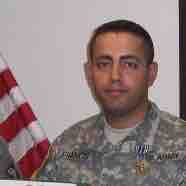

<section class="mainbar" data-ng-controller="dashboard as vm">
    <section class="matter">
        <div class="container">
            <div class="row">
                <div class="widget wblue">
                    <div data-cc-widget-header title="{{vm.title}}"></div>
                    <div class="widget-content user">
                        
                        <br />
                        <h5 class="dashboardtext">About Me</h5>
                        <h6 class="dashboardtext">
                            &nbsp;&nbsp;&nbsp;I'm a Graduate from Georgia Regent's University with a Bachelor in Computer Science Degree. My goal is to find home where my skills can grow and become efficient. My whole life i have been fascinated with Technology and the Developing world. I started coding at the age of 14, since then i decided to become a developer and create software. I Graduated with Bachelor in Computer Science Degree from Georgia Regents University in Augusta, Ga. I have worked for several years in different technology, like Building Websites (Client Side and Server Side), creating Windows Services, designing Internal Web Applications, designing Web Forms and Fixing Bugs, build severs, create new applications. I also have a good experience with Ruby, Assembly and some of the non-orthodox technology. My goal is to find a home for me to feed my skills with new technology and grow as a developer and move up in ranks of the Company.
                            <br />
                            <br />
                            &nbsp;&nbsp;&nbsp;Web Developer offering advanced knowledge of Objective C, C#, C++, Core, Xamran, HTML, RAZOR, HTML5, XML , JavaScript, SQL and ASP.NET, as well as extensive experience with MVC, MVVM, VB.NET, MVC, AngularJS, DurandalJS, Knockout and jQuery, Git, Github, Atlassian products(Stash, Bamboo, Jira, Crowd).
                            <br />
                            <br />

                            &nbsp;&nbsp;&nbsp;Software Developer skilled at technical leadership, communication and presentations. Experienced in full project life cycle from design to implementation to integration. Development successful at managing teams, driving progress toward project milestones, quality assurance and on-time delivery. Decorated military professional transitioning from the US Army to a career in
                            Technology. Highly motivated to leverage 10 years of achievements and field training experience to provide dedicated service as a Soldier in the United States Army. Former military professional seeks role in a good working eviroment to grow in and become a very effective contruputer.
                        </h6>

                        <div class="book">Resume:</div>
                        <br />
                        <a class="bookimage" href="../../Content/document/resume.pdf">
                            
                        </a>
                    </div>
                    <div class="widget-foot">
                        <div class="clearfix"></div>
                    </div>
                </div>
            </div>
        </div>
    </section>
</section>
